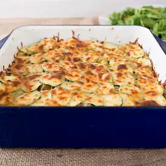

Hearty Tuna Casserole

Description
Prep: 15 mins
Cook: 45 mins
Total: 1 hr
Servings: 6
Yield: 6 servings
Ingredients
- 3 cups uncooked egg noodles
- 2 (5 ounce) cans tuna, drained
- ½ cup chopped celery
- ⅓ cup chopped green onions
- ⅓ cup sour cream
- 2 teaspoons prepared mustard
- ½ teaspoon dried thyme
- ¼ teaspoon salt
- 1 small zucchini, sliced
- 1 cup shredded Monterey Jack cheese
- 1 tomato, chopped
Steps
- Preheat oven to 350 degrees F (175 degrees C). Grease a 2 quart casserole dish.
- Bring a large pot of salted water to a boil, add noodles, and cook until al dente; drain.
- In a large mixing bowl, combine noodles, tuna, celery, and green onion. Stir in sour cream, mustard, and mayonnaise. Season with salt and thyme. Spoon 1/2 of the noodle mixture into the prepared casserole dish. Arrange a layer of zucchini over the mixture. Top with the remaining noodles, followed by a layer of zucchini. Top the entire casserole with cheese.
- Bake in preheated oven for 30 minutes, or until hot and bubbly. Sprinkle the casserole with tomatoes before serving.